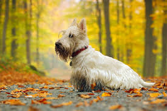

SCOTTISH TERRIER

La raza proviene de las Tierras Altas de Escocia,
y su apariencia actual se debe a los cruces de
los criadores de la región de Aberdeen.
Esta raza de perros es propensa a tener
varios tipos de enfermedades por los
cambios morfológicos que han ido experimentando,
como por ejemplo problemas de columna, o la enfermedad
de Von Willebrand entre otras.